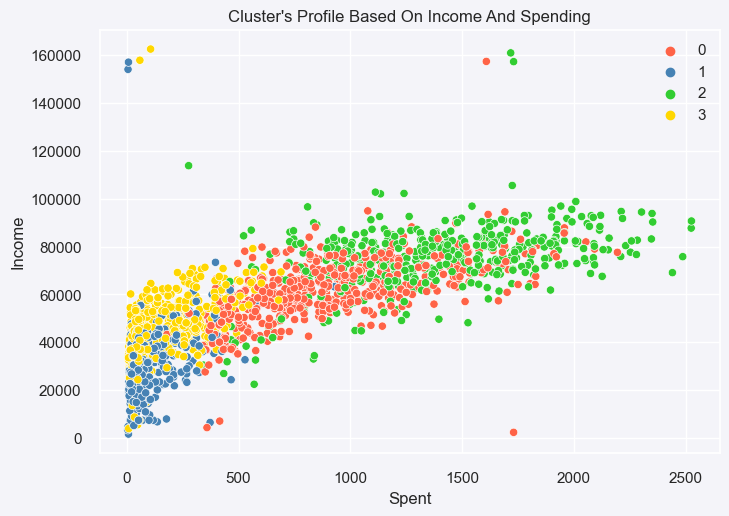
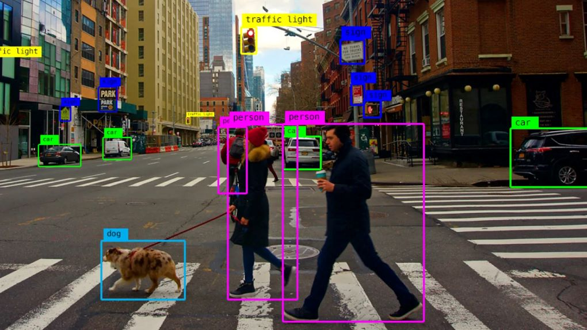
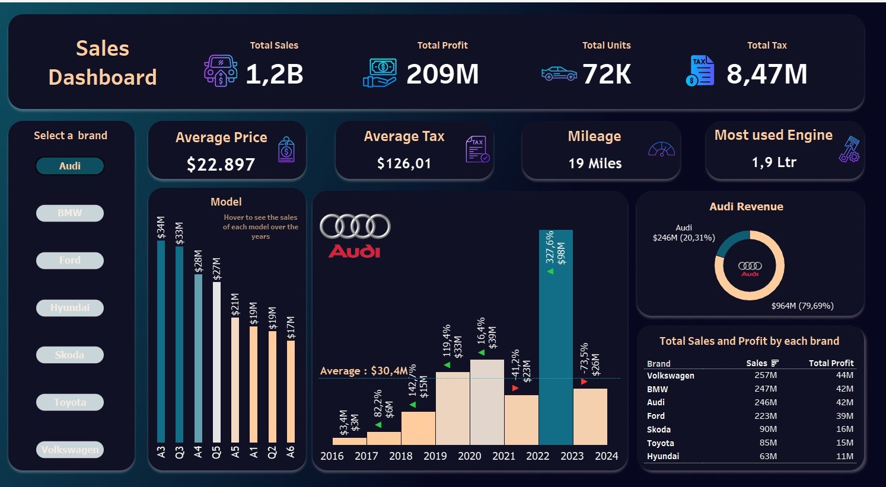
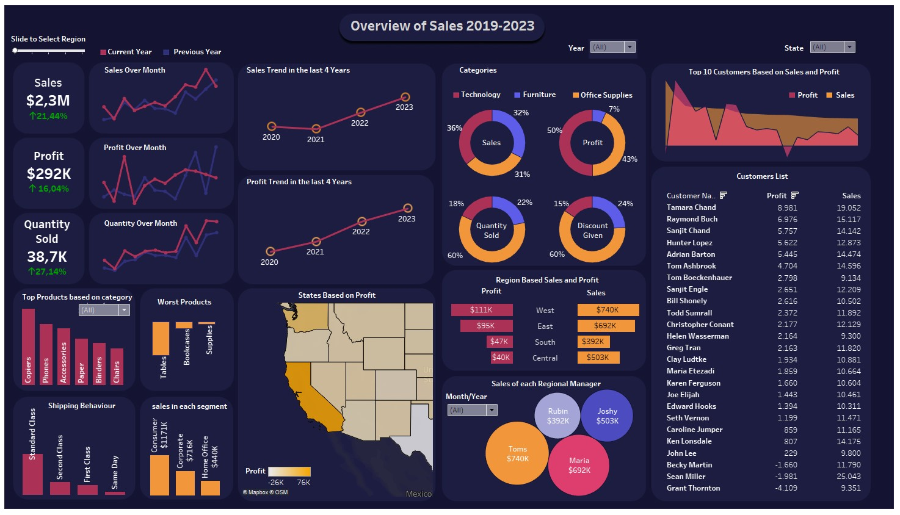
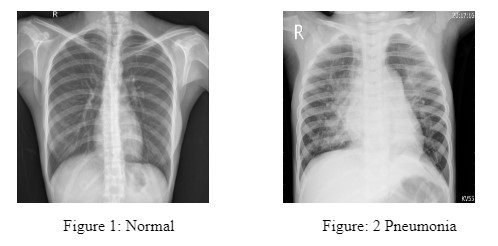

I used clustering to segment customers into 4 distinct groups based on income, spending behavior, and lifestyle.
Each group was analyzed to identify tailored sales and marketing strategies, such as targeting high-income families with premium offers and budget-conscious families with cost-saving bundles.

Implemented a YOLOv8 object detection system using the PASCAL VOC 2012 dataset, optimizing for real-time performance.
Preprocessed data, converted annotations to YOLO format, and employed transfer learning. Evaluated with metrics like mAP, precision, and recall for accurate object classification

Created an automotive sales performance dashboard in Tableau using 2017-2023 data, showcasing Audi's 327% YoY growth and Volkswagen's $257M sales.
Highlighted top-performing and underperforming models, with actionable insights to optimize inventory, marketing, and pricing strategies for growth.

Developed a Tableau dashboard (2019-2023) delivering regional and category-based sales insights for executives.
Highlighted Technology as the top sales category (36%) and Office Supplies as most profitable (43%). Recommended strategic improvements to boost underperforming regions
This project preprocesses the Autism Prediction dataset, handling missing values and scaling features. It applies Random Forest,
SVM, and Logistic Regression for classification, with a focus on improving model accuracy to support early autism detection and intervention

Chest X-rays are classified as normal or pneumonia-infected using the VGG16 deep learning model.
This automated diagnostic process helps healthcare professionals quickly and accurately detect pneumonia, improving efficiency and supporting better clinical decision-making